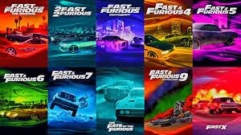
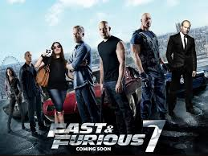

Lo recomiendo porque
"Hobbs & Shaw" es una excelente elección para los fanáticos de la saga de Rápido y Furioso. Combina acción intensa, comedia y aventura en una historia que complementa bien el universo de la franquicia.

La saga de Rápido y Furioso cuenta con 10 películas, estrenadas entre 2001 y 2023. Es una de las más populares del cine y sigue a un grupo de amigos que realizan robos y carreras ilegales, destacándose por su acción y efectos especiales.
La saga de Rápido y Furioso es una de las más populares del cine de acción. Trata sobre un grupo de amigos liderados por Dominic Toretto, que viven aventuras llenas de autos, carreras ilegales y misiones peligrosas. A lo largo de las películas, se mezclan la acción, la velocidad y la importancia de la familia y la amistad. Es ideal si te gustan las escenas intensas, los autos y las historias de equipo.
¡Déjanos tu opinión sobre la saga de Rápido y Furioso!
 enlace traile de la pelicula: Trailer de Hobbs & Shaw
enlace traile de la pelicula: Trailer de Hobbs & Shaw
Si te gusta la acción intensa y el humor, "Hobbs & Shaw" es una excelente opción. La película ofrece escenas de lucha impresionantes, persecuciones emocionantes y una dinámica divertida entre los protagonistas. Además, amplía el universo de Rápido y Furioso al explorar nuevos personajes y tramas, lo que la convierte en una adición entretenida para los fans de la saga.
"Hobbs & Shaw" es una excelente elección para los fanáticos de la saga de Rápido y Furioso. Combina acción intensa, comedia y aventura en una historia que complementa bien el universo de la franquicia.
Rapido y Furioso 1 es una película de acción que sigue a un grupo de amigos involucrados en carreras ilegales y robos. La película destaca por sus emocionantes escenas de acción, la química entre los personajes y su enfoque en la importancia de la familia y la amistad. Es una excelente opción para los amantes de las películas de acción y velocidad,y es la primera aparicion de dominic toretto y brian o conner.
 enlace traile de la pelicula: Trailer de Rápido y Furioso 1
enlace traile de la pelicula: Trailer de Rápido y Furioso 1
Rápido y Furioso 5 es una película de acción que sigue a un grupo de amigos que se reúnen para realizar un gran robo en Río de Janeiro. La película destaca por sus emocionantes escenas de acción, la química entre los personajes y su enfoque en la importancia de la familia y la amistad. Es una excelente opción para los amantes de las películas de acción y velocidad, y es la primera aparición de Dwayne Johnson como Luke Hobbs.
 enlace traile de la pelicula: Trailer de Rápido y Furioso 5
enlace traile de la pelicula: Trailer de Rápido y Furioso 5
Rápido y Furioso 7 es una película de acción que sigue a un grupo de amigos que se enfrentan a un nuevo enemigo, Deckard Shaw, quien busca venganza por su hermano. La película destaca por sus emocionantes escenas de acción, la química entre los personajes y su enfoque en la importancia de la familia y la amistad. Es una excelente opción para los amantes de las películas de acción y velocidad, y es la última aparición de Paul Walker como Brian O'Conner.

enlace traile de la pelicula: Trailer de Rápido y Furioso 7| Película | Año | Acción | Historia | ¿Vale verla? |
|---|---|---|---|---|
| Rápido y Furioso 1 | 2009 | ★★★★★ | ★★★★★ | Sí, primero |
| Rápido y Furioso 5 | 2011 | ★★★★★ | ★★★★★ | Sí |
| Rápido y Furioso 7 | 2015 | ★★★★★ | ★★★★★ | Sí |